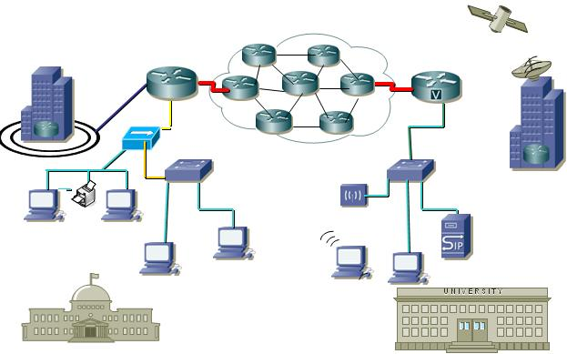
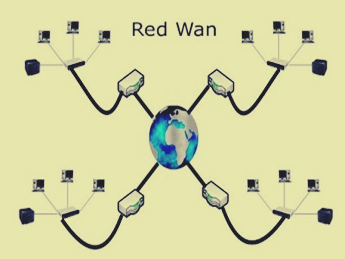

Una red informática, una red de comunicaciones de datos o una red de computadoras es la interconexión de distinto número de sistemas informáticos a través de una serie de dispositivos de telecomunicaciones y un medio físico (alámbrico o inalámbrico). Su función es compartir información en paquetes de datos. Los mismos se transmiten mediante impulsos eléctricos, ondas electromagnéticas u otros medios, empleando una codificación especial. Para ello, el sistema traduce a un mismo idioma los procesos de las distintas computadoras, a través de una serie de estándares de comunicación. Las redes de computadoras no son distintas, en su lógica de intercambio, de otros procesos comunicativos: poseen un emisor, un receptor y un mensaje, un medio a través del cual transmitir el mensaje y una serie de códigos o protocolos para garantizar su correcta comprensión. Solo que, en este caso, quienes envían y reciben mensajes son computadoras.
Funcionamiento de las redes de computadora
La red de computadoras permite compartir recursos a distancia, aumenta la velocidad de la transmisión de datos (es más rápido acceder a un archivo por una red que a través de Internet, por ejemplo) e incrementa la confiabilidad. Las computadoras pueden estar interconectadas mediante cable coaxial (que transporta los datos a través de dos conductores concéntricos), cable de par trenzado (los dos conductores concéntricos están entrelazados para reducir las interferencias) o fibra óptica (un hilo muy fino por el que fluyen los pulsos de luz con la información a transmitir).
Tipos de redes de computadoras
Redes LAN. Su nombre proviene de Local Area Network (en inglés: “Red de Área Local”), pues son las redes de menor tamaño y extensión, como las que pueden existir entre los computadores de un mismo locutorio o ciber café.
Redes MAN. Su nombre viene de Metropolitan Area Network (en inglés: “Red de Área Metropolitana”) y designa redes de tamaño intermedio, como las empleadas en grandes bibliotecas o grandes empresas, conectando áreas distintas y alejadas geográficamente entre sí.

Redes WAN. Llamada así por las siglas de Wide Area Network (en inglés: “Red de Área Amplia”), se trata de redes de gran envergadura y extenso alcance, como puede ser la red global de redes, Internet.

Existen otras posibles clasificaciones de las redes de computadoras, de acuerdo a su topología específica, su relación funcional o direccionalidad de los datos.
Elementos básicos de una red de computadoras
Servidor. Las computadoras de una red no poseen la misma jerarquía, ni desempeñan las mismas funciones. Por ejemplo, los servidores son los encargados de procesar el flujo de datos de la red, atendiendo a todas las demás computadoras conectadas (es decir, “sirviéndolos”) y centralizando el control de la red en sí misma.
Clientes o estaciones de trabajo. Estas son las computadoras que no sirven a las demás, sino que forman parte de la red y brindan acceso a la misma, solicitando los recursos administrados por el servidor.
Medios de transmisión. Se refiere al cableado, a las ondas electromagnéticas, o al medio físico que permita la transmisión de la información de la red, sea cual sea.
Elementos de hardware. Todas las piezas tecnológicas que habilitan el establecimiento físico de una red, o sea, que la permiten. Hablamos de tarjetas de red, módems y enrutadores, o antenas repetidoras que extienden la conexión inalámbricamente.
Elementos de software. Similarmente, se requiere de programas para administrar y poner en funcionamiento el hardware de comunicaciones de cada estación de trabajo, lo que incluye el Sistema Operativo de Redes (NOS, del inglés Network Operating System), que además de sostener la operatividad de la red, le brinda servicios de antivirus y firewall; así como los protocolos comunicativos (TCP/IP) que permiten a las máquinas compartir el idioma.
Ventajas de una red de computadoras
Usamos redes de computadoras para interacciones sociales, compras y mucho más.
Una red informática es una herramienta muy útil y valiosa, para centralizar y dispersar la información almacenada de un tipo de organización (empresas, instituciones, etc.). Es tan importante en el mundo contemporáneo que las empleamos constantemente sin siquiera darnos cuenta.
Desventajas de una red de computadoras
El lado débil de una red de computadoras tiene que ver con los ataques cibernéticos, que vulneran la confidencialidad de la información y pueden dar pie a peligrosas actividades.
Hablamos tanto de software malicioso (virus, adware, etc.) o de ciberterroristas (hackers), cuyos ataques pueden ocasionar pérdidas de información (y por lo tanto de capitales), violaciones a la intimidad o daños a equipos y al software. El mundo de las redes es diverso y complejo.
Ejemplos de redes de computadoras
Una red doméstica. Como las redes de WiFi que cualquier persona puede instalar en su propio hogar, para así atender a un par de computadoras y/o de teléfonos celulares. Su alcance apenas excederá los márgenes del departamento.
La red seriada de un locutorio. Los llamados cibercafés o locutorios cobraron mucho auge con la penetración de Internet, antes de la llegada de los Smartphones. Contienen una serie de computadoras que comparten su conexión a Internet, y que están disponibles para el uso del público, enmarcados en una red interna, a cuya cabeza estaba la computadora del encargado del local.
Una red de campus universitario. Llamadas CAN (Campus Area Network), se tratan en realidad de redes MAN adaptadas a los diversos edificios e intereses de la comunidad universitaria.
<
Internet. La mayor WAN disponible hoy en día: comunicando diversos aparatos tecnológicos a lo largo de distancias enormes, de un lado al otro del mundo. Esta gigantesca red involucra computadores en todas partes, operando de servidores y de estaciones de trabajo por millones.